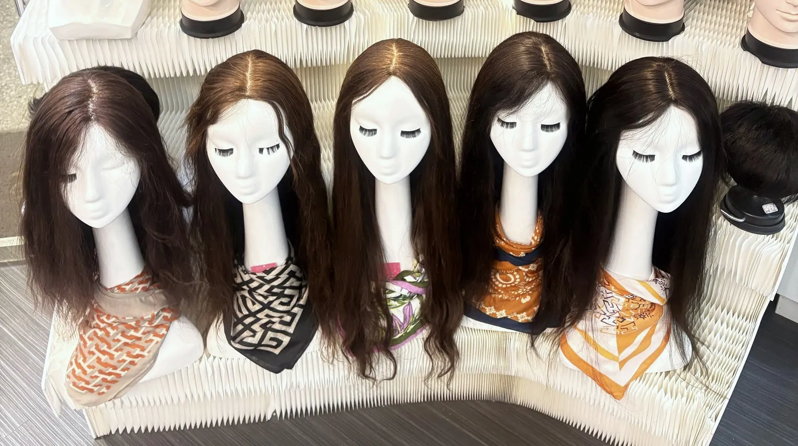
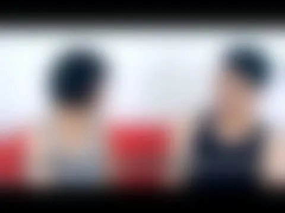
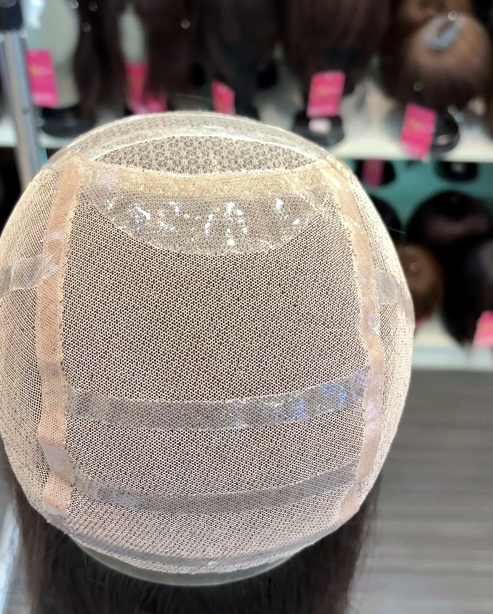
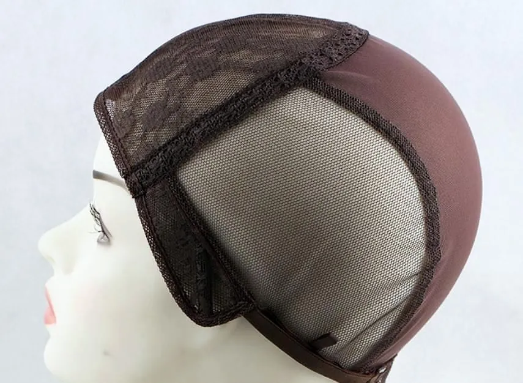
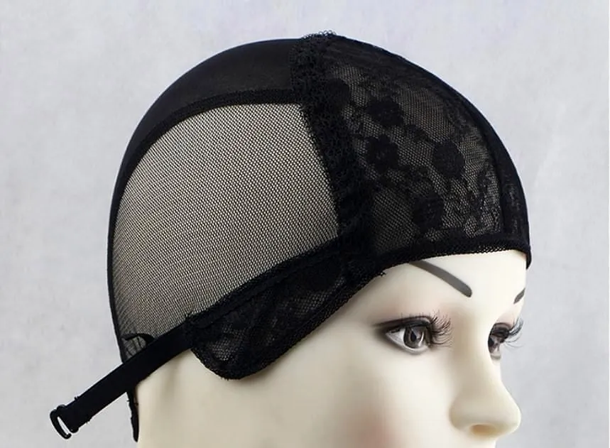
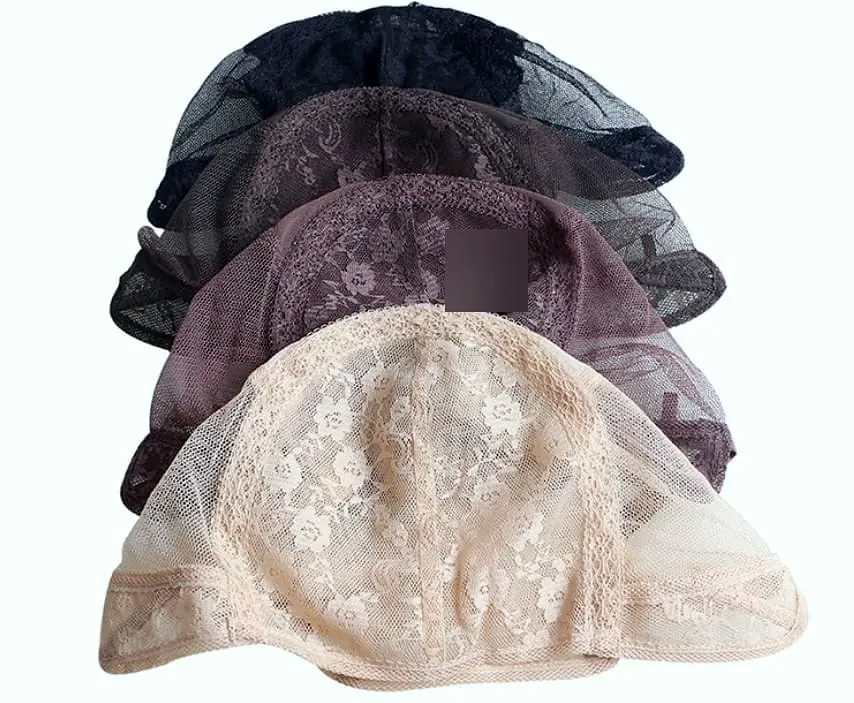
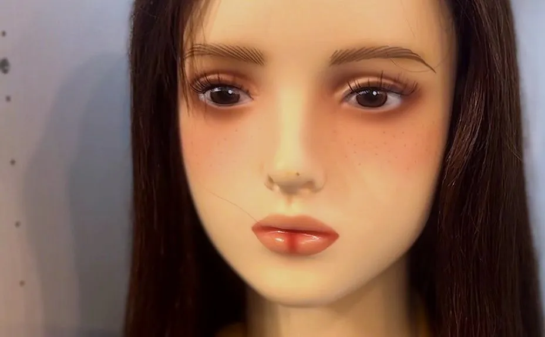

先看重點
哈髮科技假髮是台北後站的假髮專門店，在台北市大同區鄭州路23號，台北地下街 Y13、Y15 出口旁。我們陪伴因化療落髮、需要每天長時間戴假髮的朋友。現場試戴、比較不同底網，設計師賈斯汀一對一服務，家人可以陪同。
挑化療假髮，先看三件事：透不透氣、頭圍合不合、髮際線自不自然。
非醫療建議，頭皮不適請先就醫。
化療後多久會掉髮？什麼時候準備假髮？
每個人的藥物和療程不同，以下是公開衛教資料的常見情況。實際請以醫療團隊說明為準。
- 一
療程開始前
頭髮還在時先來試戴，比較好在店裡現場比對原本的髮色，想要的話也可以到自然光下再看一次。先準備好一頂現成假髮。
- 二
開始用藥後幾週
常見是 2–3 週開始掉髮。需要剃髮，也可以來店討論。戴上準備好的現成假髮。
- 三
治療期間
每天戴現成假髮。在家、睡覺時讓頭皮休息。不服貼就帶回店裡看看。
- 四
療程結束後
約 2–3 個月開始長新髮，3–6 個月會比較明顯。這時再換一頂新的假髮。
賈斯汀的建議：先戴現成，之後再換
療程開始前，先準備好一頂現成假髮。治療期間，就戴這頂現成款。療程結束後，再換一頂新的。想要訂製，再訂製就好。
現成款試戴滿意、修剪好，當天就能戴走。訂製款依頭型手工製作，約需 3–4 個月。
我們曾為國片《乳．房》提供劉香慈片中的假髮
2019 年上映的國片《乳．房》（導演謝志文），片中劉香慈的各種造型，都是由我們準備和整理的假髮。戴假髮，一樣可以有很多種樣子。

▶ 觀看影片到店試戴，請看這 5 件事
不用急著決定，一項一項確認就好。家人可以幫你從旁邊和後面看。
帽體和內網的觸感
摸摸內側軟不軟、刺不刺。戴著坐十分鐘，感覺悶不悶、癢不癢。
頭圍鬆緊和穩定度
太緊會頭痛，太鬆會移位。低頭、轉頭試試看，假髮會不會跑掉。
髮際線、髮量，像不像自己
看額頭和鬢角自不自然。拍照、換個光線看看，也問問陪你來的人。
好不好整理
台灣一熱就流汗。問問設計師，流汗後要怎麼整理。
固定方式
整頂假髮多用夾扣、鬆緊帶。頭皮敏感先問醫師，再決定要不要用膠帶。
可以現場比較的底網和材質
不同底網的透氣和觸感都不一樣。到店親手摸摸看，設計師會當面說明。






現場百款試戴，家人也歡迎陪同。化療後／醫療用假髮
化療假髮常見問題
化療後多久會掉髮？什麼時候準備假髮？
每個人的藥物和療程不同。公開衛教資料常見是開始用藥後 2–3 週開始掉髮；建議療程開始前、頭髮還在時先來試戴，先準備好一頂現成假髮。實際請以醫療團隊說明為準。
挑化療假髮先看什麼？
先看三件事：透不透氣、頭圍合不合、髮際線自不自然。假髮內部有調節帶，化療後頭圍變小、假髮變鬆，可以自己調整。
化療前可以來店剃髮嗎？
化療前也可以來店討論剃髮。一對一進行，空間私密，建議先用 LINE 或電話預約。
頭皮敏感要怎麼固定？
整頂假髮一般用內建夾扣、鬆緊帶固定。化療期間頭皮較敏感，用膠帶前請先問醫師；也可以改用夾扣或魔術貼。
化療假髮和一般假髮差在哪？
最大的差別是「怎麼戴」。化療假髮常常每天戴、一戴很多小時，所以先看能不能舒服戴一整天；真正貼著頭皮的帽體和內網，比髮型、長度更重要。
非醫療建議，頭皮不適請先就醫。